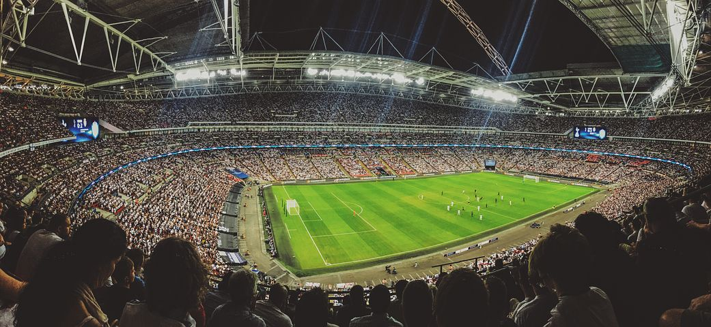

自己紹介
Introduction
- 学歴
⇒GMARCH文系学部 - 部活
⇒高校3年まで野球部 - プログラミング
⇒2020年11月から学習スタート、独学です。 - 言語
⇒HTML、CSS、現在JavaScript、フレームワーク（学習中） - 趣味
⇒サッカー観戦、YouTube、オードリーのラジオ
趣味
Hobby

１番の趣味はサッカーの動画を観ることです。
競技経験はありませんが元々興味はありました。
戦術的要素が強い現代フットボールは、理解が深まれば深まるほど楽しめるのが面白いと感じています。
好きなチームはマンチェスターシティ。
日本では川崎フロンターレ。
好きな選手はデブライネ、ハメスロドリゲス、ディバラ。
日本では上田綺世、大島僚太、三苫薫。
気分転換
Refresh
主に仮眠、音楽、YouTube、ラジオで気分転換してます。
仮眠は15分程度取ると疲れも取れ、その後の作業も捗ります。
音楽はYOASOBI、CreepyNuts、日向坂46をよく聴きます。
YOASOBIは「群青」、CreepyNutsは「生業」、日向坂46は「青春の馬」が好きです。
YouTubeはフリーランスやプログラミングに関するもの、オードリーや日向坂関連のもの、サッカーのハイライトなどを観ます。
ラジオはオードリーのオールナイトニッポンを毎週聴いてます。
将来像
Future
現状はまだ初学者であるため大した実力もないが、将来的にはプログラミングのスキルレベルはもちろん、営業スキルや自己管理能力も高め、フリーランスとして収入を得られるよう人材になりたいと思っています。具体的な目標としては月60万円以上の収入を安定して得られるようになりたいと考えており、その目標達成のためにも自分に厳しく、人の何倍も努力をし、社会に必要とされる人材へと成長していきたい。